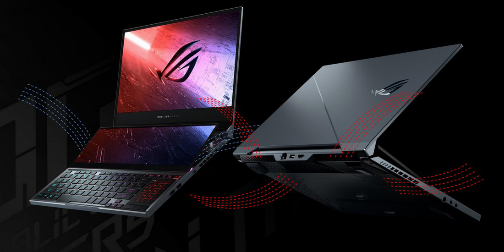
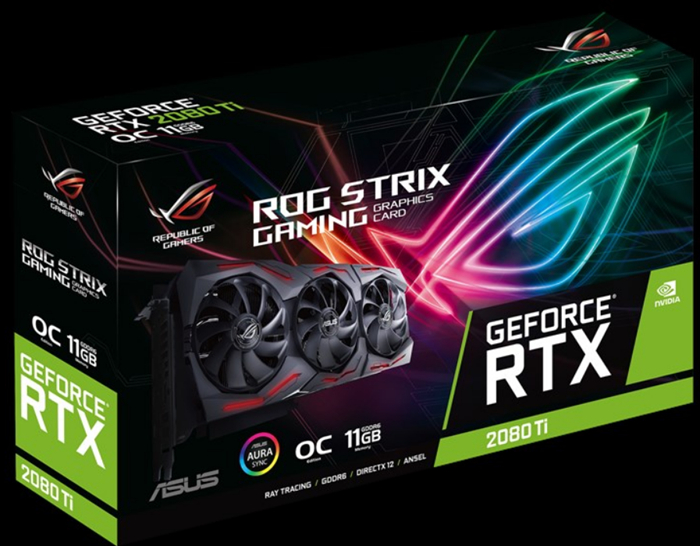
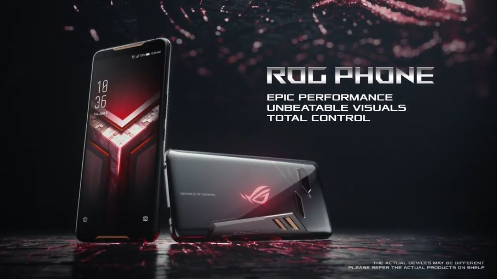
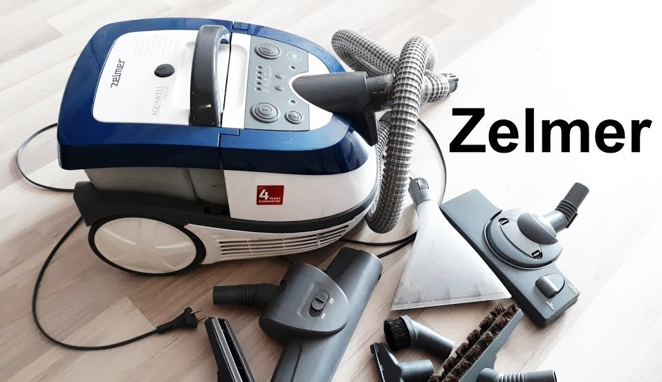

ROG RAPTURE GT-AX11000 - ТРЕХДИАПАЗОННЫЙ МАРШРУТИЗАТОР 802.11AX, СОЗДАННЫЙ ДЛЯ ГЕЙМЕРОВ. ROG Rapture GT-AX11000 предлагает максимальную скорость и емкость для геймеров и энтузиастов.
Это первый в мире трехдиапазонный маршрутизатор 802.11ax с максимальной совокупной пропускной способностью почти 11 000 Мбит / с в трех диапазонах.
GT-AX11000 поддерживает скорость до 1148 Мбит / с в диапазоне 2,4 ГГц и до 4804 Мбит / с в каждом из двух диапазонов 5 ГГц, а второй диапазон 5 ГГц можно
зарезервировать для игровых устройств, чтобы другие беспроводные устройства не мешали работе ваших основных компьютеров. Благодаря WiFi Radar маршрутизатор
может анализировать окружающую среду и использовать переключение диапазона DFS для переключения выделенного игрового диапазона на лучший канал для максимальной
производительности. Цена:120000 сом Купить
 ROG Zephyrus Duo 15
Основной 15,6-дюймовым дисплей в зависимости от модификации может иметь панель 4К 60 Гц или FHD и 300 Гц. В данной конфигурации 4К.
В обоих случаях предусмотрена поддержка технологии синхронизации Nvidia G-Sync. Процессор Intel Core i9-10980HK,
видеокарта GeForce RTX 2080 SUPER c 8ГБ видеопамяти, 16 ГБ оперативной памяти с возможностью расширения, SSD на 2 ТБ и аккумулятор на 90 Вт·ч с
зарядкой через USB-C или Thunderbolt 3. Также стоит отметить поддержку Wi-Fi 6 и Bluetooth 5.0. Второй экран с диагональю 14,1 дюйма
и разрешением 3840 × 1100 пикселей. Он может располагаться под углом прямо над клавиатурой и
выступать как продолжение основной панели или же использоваться как обособленная область отображения. Цена:80000 сом Купить
 ASUS ROG Strix GeForce RTX 2080Ti
Архитектура Turing новых графических процессоров NVIDIA предлагает фундаментальное изменение в области видеокарт,
так как рядом с обычным процессором шейдинга NVIDIA добавила ядра RT (Raytracing), а также Tensor (AI). Видеокарта
ASUS ROG Strix GeForce RTX 2080 Ti оснащена графическим процессором TU102. Этот GPU имеет 4352 активных шейдерных процессора,
что существенно больше по сравнению с GeForce GTX 1080 Ti. Модель обрела 11 Гб графической памяти GDDR6, а также шину памяти
шириной 352 бита. Новые микросхемы Micron графической памяти имеют стандартную частоту 14 ГГц (эффективная тактовая частота).
Графический процессор TU102 имеет шесть кластеров графической обработки (GPC), 36 кластеров обработки текстур (TPC) и 72
потоковых мультипроцессора (SM). Каждый SM содержит 64 ядра CUDA, восемь тензорных ядер, четыре текстурных блока и 96 кб
L1/разделяемой памяти, которые можно настроить различной емкости в зависимости от вычислительной или графической рабочей нагрузки.
Ускорение трассировки лучей выполняется с помощью новой обработки ядрами RT: TU102 имеет 576 тензорных ядер и 96 ROP-блоков.
В режиме OC тактовая частота GPU равна 1665 МГц, а базовая частота — 1350 МГц. В режиме игры (по умолчанию) — тактовая частота 1650 МГц,
базовая частота — 1350 МГц. Цена:80000 сом Купить
 Asus ROG Phone 2 (8+128) ROG Phone II Ultimate Edition улучшит ваш игровой опыт благодаря эксклюзивной расцветке Matte Black,
которая придает ему уникальность, и характерному узору, изображенному на задней крышке. Экран 6.59 дюйма, 2340х1080 точек
(FullHD+), AMOLED, соотношение 19.5:9, плотность пикселей 391 ppi, частота обновления экрана 120 Гц (время отклика 1 мс)
, частота обновления сенсорного слоя 240 Гц, HDR, глубина цвета 10 бит, цветовой охват 111,8%, Аккумулятор Li-Po, 6000 мАч,
поддержка Quick Charge 4.0 и Power Delivery , Аудио Стереодинамики, поддержка DTS:X Ultra (виртуальное звучание 7.1 в наушниках)
, два выделенных усилителя, поддержка формата Hi-Res 24 бита / 192 кГц, система из 4 микрофонов с поддержкой шумоподавления, FM-радио
, яркость 600 кд/м2, контрастность 500 000:1. Фронтальная камера 24 МП, диафрагма f/2.2, 0,9 мкм, запись видео 1080P@30 fps.
Аккумулятор Li-Po, 6000 мАч, поддержка Quick Charge 4.0 и Power Delivery Цена:37900 сом Купить
 Моющий пылесос Zelmer 919.0 ST Моющий пылесос Zelmer 919.0 ST Limited Design
может использоваться для сухой и влажной уборки, а также для всасывания жидкости.
Вместе с ним поставляется 9 специальных насадок, которые подходят для очистки ковров,
паркета и других напольных покрытий, а также для мягкой мебели.
УНИВЕРСАЛЬНОЕ ПРИМЕНЕНИЕ
Устройство можно использовать,
установив в него обычный мешок-пылесборник или аквафильтр.
В последнем случае эффективность борьбы с мелкими частицами пыли и
распространёнными аллергенами значительно повышается. Кроме того, в приборе
предусмотрен резервуар для моющего средства, обеспечивающего эффективное выведение пятен с любых тканей. Цена:13000 сом Купить